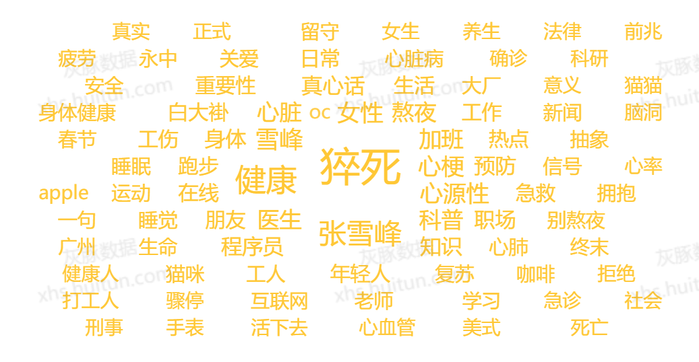

抖音
44.3 亿#猝死 话题曝光量最高，最擅长把单一事件推成高可见度公共热点。
基于大数据分析
从健康报告、新闻资料到抖音、小红书、豆瓣的多平台数据，公众对“猝死”的理解 不只来自医学知识本身，也来自热点事件、生活压力和平台讨论不断叠加出的情绪现场。
受访者最近一年曾担心自己猝死
我国每年心源性猝死者约达该量级
中国心血管病现患病人数约达该规模
抖音 #猝死 话题曝光量
小红书 #猝死# 话题浏览量
01 公众感受
丁香医生 2022 国民健康洞察报告显示，只有 44% 的人“从未担心”猝死。 在年龄分组中，00 后和 95 后“每天或经常担心”的比例最高；工作时长超过 12 小时的人， 有过担心的比例达到 70%。
01A 压力曲线
02 医学事实
文献资料显示，猝死可分为心源性与非心源性两类。心源性猝死约占猝死的 80%，常见相关因素包括冠心病、致命性心律失常、心肌炎、肥厚性心肌病等。
心脏骤停后 1 分钟内实施心肺复苏并使用 AED，抢救成功率可达 90%；每延误 1 分钟， 成功率下降约 10%。真正决定结局的，往往不是话题热度，而是现场反应速度。
02A 医学补充
根据“央视新闻”整理的公开资料，年轻人猝死常常和长期熬夜、吸烟、高热量饮食、 久坐不动等生活方式相关；而真正容易被忽视的，是胸闷、胸痛、心慌、呼吸不畅等预警征兆。
典型征兆
不典型征兆
03 平台传播
如果把抖音、小红书、豆瓣放在一起看，差异并不只在“谁更火”。抖音负责把事件推成 全网可见的爆点，小红书负责把恐惧转译成“前兆”“预防”“自救”的可操作知识， 豆瓣则把个体焦虑延长成带有社会议题色彩的连续讨论。
抖音
44.3 亿#猝死 话题曝光量最高，最擅长把单一事件推成高可见度公共热点。
小红书
6147.6 万#猝死# 话题浏览量高，用户更集中搜索前兆、预防、急救与日常护心。
豆瓣
4.24 万1224 个主题累计回复量，讨论停留时间更长，也更容易衍生情绪与责任追问。
03A 平台细看
从现有样本看，三个平台并不需要机械平均。抖音最有传播强度，小红书最有生活化方法价值， 豆瓣虽然总体量级不如前两者，但在“为什么大家会对猝死持续焦虑”这件事上，研究价值反而更高。
抖音词条榜显示，#猝死 的曝光量达到 44.3 亿，明显承担“事件入口”的作用。 小红书词条榜里，#猝死前兆#、#猝死预防#、#预防猝死# 等词条稳定出现，说明用户更关注 可操作的信息。豆瓣则在 1224 条帖子里积累出 42437 条回复，平均每帖 34.7 条、中位数 12 条， 其中 105 条帖子回复过百，说明它更容易形成持续性讨论而非一次性浏览。
03B 话题榜
04 内容样态

05 关键词云
结论
猝死之所以会成为今天高频出现的公共话题，并不只是因为它是一种医学风险， 更因为它被平台传播、生活压力与社会情绪不断放大。数据里可以看到，公众的担忧首先来自 真实的健康隐患，比如心血管疾病的高患病规模、心源性猝死的高比例，以及年轻人长期熬夜、 久坐、压力过大等生活方式风险；与此同时，抖音、小红书和豆瓣又分别把这种风险转化成 热点事件、实用方法和持续讨论，使“猝死”从医学名词变成了日常焦虑的一部分。
因此，这组数据真正想提醒的，不是制造恐慌，而是帮助人们把模糊的担忧拆解成可以识别的信息： 哪些生活习惯正在增加风险，哪些身体信号可能是预警，哪些急救知识能在关键时刻争取时间。 比起反复转发“又有人猝死了”，更重要的也许是更早识别风险、更及时调整生活方式， 并在真正的危急时刻知道该怎么做。
数据来源：1 春雨.猝死原因多,心源性占多数[J].江苏卫生保健,2021,(05):12-13。 2 【丁香医生】2022 国民健康洞察报告。 3 抖音/小红书/豆瓣相关数据。